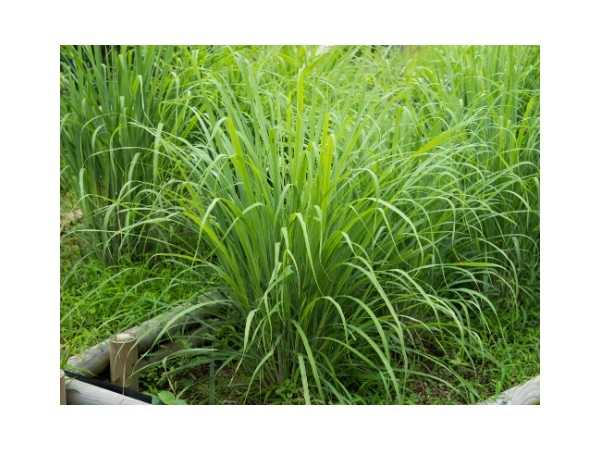

Cymbopogon citratus
Common Names: Lemongrass, West Indian Lemongrass, Citronella Grass, Fever Grass
Local Name: Elumichai Pul (Tamil), Nimbu Ghas (Hindi), Sera (Sinhala)
Family: Poaceae (Grass family)
Origin: South and Southeast Asia (India, Sri Lanka, Malaysia)
Plant Type: Perennial aromatic grass, 1–1.5 meters
Variety: Cymbopogon citratus (West Indian), C. flexuosus (East Indian/Cochin lemongrass)
Average Lifespan: 4–6 years per clump; indefinite with division
| Growth Habit | Dense, clump-forming perennial grass; grows in tufted bunches from a short rhizomatous base |
| Plant Size | 1–1.5 meters tall; clumps 60–90 cm wide |
| Leaves | Long, linear, arching, 60–100 cm long, 1–2 cm wide, blue-green, sharp edges, strong lemon scent |
| Flowers | Rarely flowers in tropical cultivation; when present, large compound panicles with paired spikelets |
| Flower Characteristics | Inconspicuous grass flowers; rarely seen in garden settings; wind-pollinated |
| Fruit | Caryopsis (grass grain); rarely produced in cultivation |
| Fruit Color | N/A — fruiting is extremely rare in cultivation |
| Seed Characteristics | Seeds rarely viable; propagation is almost entirely vegetative |
| Root System | Dense, fibrous root system from short rhizomes; excellent soil binder |
| Climate | Tropical to warm subtropical; thrives in hot, humid conditions |
| Temperature Range | 20–35°C ideal; growth slows below 15°C; frost kills foliage (roots may survive mild frost) |
| Rainfall Requirement | 700–2500 mm annually; tolerates both wet and moderately dry conditions |
| Soil Type | Well-drained sandy loam to loam; tolerates poor soils; avoid heavy clay |
| Soil pH Preference | 5.0–8.4 (highly adaptable) |
| Sun Requirement | Full sun (6+ hours daily); best oil content and growth in full sun |
| Spacing | 45–60 cm between plants; rows 60–90 cm apart |
| Irrigation Method | Regular watering during establishment; drought-tolerant once established |
| Water Requirement | Low to moderate; tolerates dry spells; more water produces more leaf biomass |
| Can it Grow in Pots? | Yes, in medium to large pots (10–20 liters); excellent for patios and balconies |
| Fertilizer Schedule | Light feeding every 6–8 weeks during growing season; nitrogen promotes leaf growth |
| Recommended Organic Fertilizers | Compost, diluted cow dung slurry, vermicompost, grass clippings as mulch |
| Pesticide Frequency | Almost never needed; lemongrass oil is itself a natural pest repellent |
| Recommended Organic Pesticides | Rarely required; the plant's citral content repels most insects naturally |
| Mulching Practice | Dried lemongrass trimmings make excellent mulch; suppress weeds around other plants |
| Training System | None needed; grows as natural clump; divide every 2–3 years to maintain vigor |
| Pruning Time | Cut back to 15–20 cm in late winter/early spring to rejuvenate |
| How to Prune | Cut entire clump to 15 cm above ground; remove dead outer leaves; harvest outer stalks regularly |
| Common Pests | Virtually pest-free; occasional rust mites or grasshoppers |
| Common Diseases | Rust (Puccinia spp.) in very humid conditions; leaf blight in waterlogged soil |
| Disease Prevention & Remedies | Good air circulation, avoid waterlogging, remove infected leaves; generally disease-resistant |
| Pollination Details | Wind-pollinated grass; rarely flowers in tropical cultivation |
| Propagation by Seeds | Seeds rarely available; if obtained, surface sow in warm moist conditions; slow germination |
| Propagation by Cuttings | Clump division is the primary method; separate outer stalks with roots; plant directly; roots in 1–2 weeks |
| Propagation by Grafting | Not applicable; store-bought stalks can be rooted in water before planting |
| Water Usage | Low; drought-tolerant once established; efficient water use for biomass produced |
| Soil Conservation Practices | Dense fibrous roots excellent for erosion control; used as contour hedgerows on slopes |
| Organic Practices Used | Natural pest repellent for companion plants; citronella oil is a natural insecticide |
| Companion Plants | Citrus trees, tomatoes, peppers (repels whiteflies and mosquitoes); border plant for vegetable gardens |
| Biodiversity Benefits | Provides habitat for beneficial insects; used in integrated pest management systems |
| Commercial Production Regions | India (Kerala, Tamil Nadu, Karnataka), Guatemala, China, Indonesia, Sri Lanka |
| Market Uses | Fresh stalks for cooking, dried lemongrass tea, essential oil, citronella products |
| Processing Uses | Essential oil (citral) for perfumery, lemongrass tea, flavoring, mosquito repellent products, soap making |
| Market Value (Approx.) | ₹30–80 per bundle (fresh); essential oil ₹800–2000 per liter; dried tea ₹200–500 per 100g |
| Symbolism | Symbol of tropical freshness; widely associated with Southeast Asian and South Indian herbal traditions |
| Traditional Uses | Used in Thai, Vietnamese, and Sri Lankan cuisine for centuries; traditional fever remedy (hence "fever grass"); used in Ayurvedic and folk medicine |
| Anxiety & Sleep | Lemongrass tea is a popular calming beverage; citral has mild sedative properties |
| Immune Support | Antimicrobial and antifungal properties; traditional remedy for colds and fevers |
| Anti-inflammatory Properties | Citral and geraniol exhibit anti-inflammatory effects; used for joint pain relief |
| Heart Health | May help lower cholesterol; potassium content supports blood pressure regulation |
| Digestive Health | Carminative; relieves bloating and stomach cramps; lemongrass tea aids digestion |
Disclaimer: Information provided is for educational purposes only and not a substitute for medical advice.
Add your field observations here.